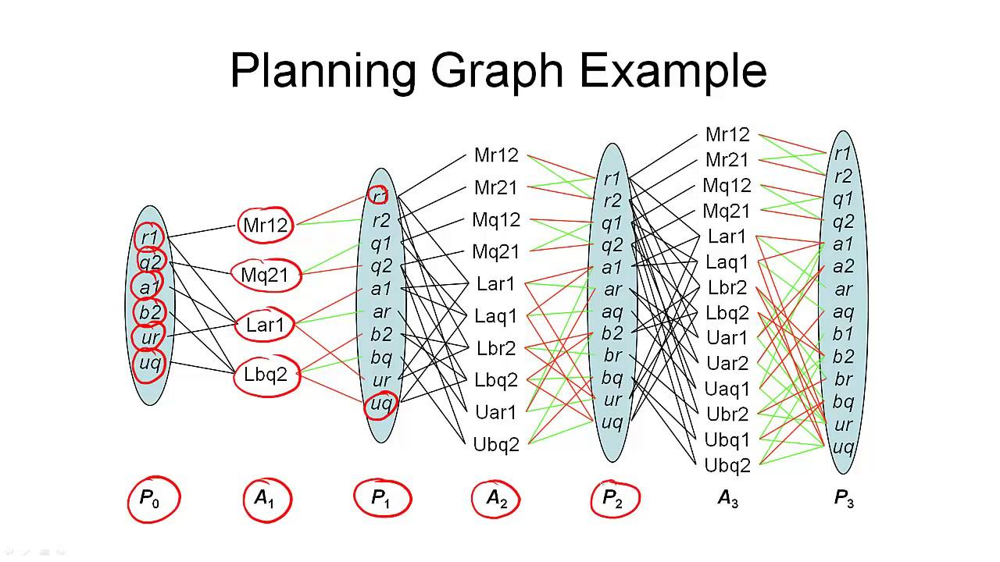
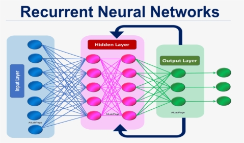

Create a Language Model from Scratch
A language model is a model that predict the next word in the sentence.
First Language Model
Build a model to predict each word based on the previous three words by create a list of every sequence of three words as independent variables, and the next word after each sequence as the dependent variable The model takes three words as input, and returns a prediction of the probability of each possible next word in the vocab use three standard linear layers, but with two tweaks. 1. the first linear layer will use only the first word’s embedding as activations, - the second layer will use the second word’s embedding plus the first layer’s output activations, and - the third layer will use the third word’s embedding plus the second layer’s output activations. - The key effect of this is that every word is interpreted in the information context of any words preceding it. 2. each of these three layers will use the same weight matrix - The way that one word impacts the activations from previous words should not change depending on the position of a word. eventhough, - activation values will change as data moves through the layers, but the layer weights themselves will not change from layer to layer. - So, a layer does not learn one sequence position; it must learn to handle all positions.
The architect of the first model 
3 layers model
The first cut of the code for 3 layers model use: 1. The embedding layer (input2_hidden, for input to hidden) 2. The linear layer to create the activations for the next word (hidden2_hidden, for hidden to hidden) 3. A final linear layer to predict the fourth word (hidden2_output, for hidden to output)
They all use the same embedding since they come from same data
class LMModel1(Module):
def __init__(self, vocab_sz, n_hidden):
self.input2_hidden = nn.Embedding(vocab_sz, n_hidden)
self.hidden2_hidden = nn.Linear(n_hidden, n_hidden)
self.hidden2_output = nn.Linear(n_hidden,vocab_sz)
# input2_hidden is embedding layer
# hidden2_hidden is linear layer
# hidden2_output is linear layer
def forward(self, x):
h = F.relu(self.hidden2_hidden(self.input2_hidden(x[:,0])))
h = h + self.input2_hidden(x[:,1])
h = F.relu(self.hidden2_hidden(h))
h = h + self.input2_hidden(x[:,2])
h = F.relu(self.hidden2_hidden(h))
return self.hidden2_output(h)
L((tokens[i:i+3], tokens[i+3]) for i in range(0,len(tokens)-4,3))
# tensor of numericalized value for model
seqs = L((tensor(nums[i:i+3]), nums[i+3]) for i in range(0,len(nums)-4,3))
seqs
bs = 64
cut = int(len(seqs) * 0.8)
# create batch
dls = DataLoaders.from_dsets(seqs[:cut], seqs[cut:], bs=64, shuffle=False)
learn = Learner(dls, LMModel1(len(vocab), 64), loss_func=F.cross_entropy,
metrics=accuracy)
learn.fit_one_cycle(4, 1e-3) compare to the simplest model which always prdict the next word which is ‘thousand’ to see how it performs:
# a simplest model that always predict 'thousand' on each input sentence
c = Counter(tokens[cut:])
mc = c.most_common(5)
mc
mc[0][1] / len(tokens[cut:])
n,counts = 0,torch.zeros(len(vocab))
for x,y in dls.valid:
n += y.shape[0]
for i in range_of(vocab): counts[i] += (y==i).long().sum()
#index of the most common words ('thousand')
idx = torch.argmax(counts)
idx, vocab[idx.item()], counts[idx].item()/n
Refactor to use loop: the RNN

Rewrite the code to use loop this is look closer to RNN
class LMModel2(Module):
def __init__(self, vocab_sz, n_hidden):
self.input2_hidden = nn.Embedding(vocab_sz, n_hidden)
self.hidden2_hidden = nn.Linear(n_hidden, n_hidden)
self.hidden2_output = nn.Linear(n_hidden,vocab_sz)
# refactor to use for loop the RNN!
def forward(self, x):
h = 0. # using broascast
for i in range(3):
h = h + self.input2_hidden(x[:,i])
h = F.relu(self.hidden2_hidden(h))
return self.hidden2_output(h)
learn = Learner(dls, LMModel2(len(vocab), 64), loss_func=F.cross_entropy,
metrics=accuracy)
learn.fit_one_cycle(4, 1e-3)
Refactor to add memory to RNN
Add the ability to retain previous word instead of start up new every time 
class LMModel3(Module):
def __init__(self, vocab_sz, n_hidden):
self.input2_hidden = nn.Embedding(vocab_sz, n_hidden)
self.hidden2_hidden = nn.Linear(n_hidden, n_hidden)
self.hidden2_output = nn.Linear(n_hidden,vocab_sz)
self.h = 0. # using broascast
# refactor to use for loop the RNN!
def forward(self, x):
for i in range(3):
self.h = self.h + self.input2_hidden(x[:,i])
self.h = F.relu(self.hidden2_hidden(h))
out = self.hidden2_output(self.h)
self.h = self.h.detach() # do bptt
return out
def reset(self): self.h = 0.
BPTT Backpropagation through time
This model hidden state now can remember previous activation from previous batch and the gradient will be calculate on sequence length token of the past not instead of recalculate with each new stream this is call BPTT
# rearrange data so model see in particular sequence
m = len(seqs)//bs
m,bs,len(seqs)
# reindex model see as contiguous batch with each epoch
def group_chunks(ds, bs):
m = len(ds) // bs
new_ds = L()
for i in range(m): new_ds += L(ds[i + m*j] for j in range(bs))
return new_ds
cut = int(len(seqs) * 0.8)
dls = DataLoaders.from_dsets(
group_chunks(seqs[:cut], bs),
group_chunks(seqs[cut:], bs),
bs=bs, drop_last=True, # drop last batch that have diff shape
shuffle=False) # maintain sequence
learn = Learner(dls, LMModel3(len(vocab), 64), loss_func=F.cross_entropy,
metrics=accuracy,
cbs=ModelResetter) # callback to reset each epoch
learn.fit_one_cycle(10, 3e-3)Add More signal: keep the output
The model no longer throw away the output from previous run but add them as input to current run
sl = 16
seqs = L((tensor(nums[i:i+sl]), tensor(nums[i+1:i+sl+1]))
for i in range(0,len(nums)-sl-1,sl))
cut = int(len(seqs) * 0.8)
dls = DataLoaders.from_dsets(group_chunks(seqs[:cut], bs),
group_chunks(seqs[cut:], bs),
bs=bs, drop_last=True, shuffle=False)
# check if it still offset by 1
[L(vocab[o] for o in s) for s in seqs[0]]Rewrite the model to now output every word instead of every 3 words in order to feed this into next run
class LMModel4(Module):
def __init__(self, vocab_sz, n_hidden):
self.i_h = nn.Embedding(vocab_sz, n_hidden)
self.h_h = nn.Linear(n_hidden, n_hidden)
self.h_o = nn.Linear(n_hidden,vocab_sz)
self.h = 0
def forward(self, x):
outs = []
for i in range(sl):
self.h = self.h + self.i_h(x[:,i])
self.h = F.relu(self.h_h(self.h))
outs.append(self.h_o(self.h))
self.h = self.h.detach()
return torch.stack(outs, dim=1)
def reset(self): self.h = 0
def loss_func(inp, targ):
return F.cross_entropy(inp.view(-1, len(vocab)), # flatten out to match bs x sl x vocab_sz from model
targ.view(-1)) # flatten out to match bs x sl x vocab_sz from model
learn = Learner(dls, LMModel4(len(vocab), 64), loss_func=loss_func,
metrics=accuracy, cbs=ModelResetter)
learn.fit_one_cycle(15, 3e-3) Recurrent Neural Network: RNN
 RNN feed the output activation value back into hidden layer to help the hidden layers retain info about previous run therefore have some memory of the past.
Multi-Layer RNN
since the current model use the same weight matrix for each hidden layer which mean there no new info to be learn from. One way to To improve the model further is to stack more layers by feed the output from one layer into the next layer so on.
Look at it in unrolling way 
Refactoring to use PyTorch
The model now has too deep layers this could lead to problem of vanishing or exploding gradient
class LMModel5(Module):
def __init__(self, vocab_sz, n_hidden, n_layers):
self.i_h = nn.Embedding(vocab_sz, n_hidden)
self.rnn = nn.RNN(n_hidden, n_hidden, n_layers, batch_first=True)
self.h_o = nn.Linear(n_hidden, vocab_sz)
self.h = torch.zeros(n_layers, bs, n_hidden)
def forward(self, x):
res,h = self.rnn(self.i_h(x), self.h)
self.h = h.detach()
return self.h_o(res)
def reset(self): self.h.zero_()
learn = Learner(dls, LMModel5(len(vocab), 64, 2),
loss_func=CrossEntropyLossFlat(),
metrics=accuracy, cbs=ModelResetter)
learn.fit_one_cycle(15, 3e-3)Exploding or Disappearing Activations
The problem stem from the gradient value calcutated from the output layer won’t propagated back to the earlier layer. This is because the network is too deep.
Vanishing Gradient:
As the gradient value travel backward the especially the small value is diminishing as the floating point value get computed and recomputed many time each time it get round off closer and closer to 0 and finally become 0.
Exploding Gradient:
This the opposite of vanishing gradient. This phenomena happen espcially when the large value get larger with each computation it get exponentially large until it get large closer to infinity and become useless. 
The floating point problem
One problem with doing floating point math with computer is that computer has limit amount of storage and floating point number is imprecise e.g. 1.0000012 or 1.00000000000000000000000012 is these two numbers are the same value? The answer is it’s depend on what do you want to do with it. On some task the first one is good enough but on other the second is what require. To store the second number require more storage.
The impreciseness is rather harder to understand. Float number get denser and denser when value get closer and closer to 0. In practice how do you represent this to the computer so it do some useful work. The IEEE organization come up with a standard which require how much storage should be devoted to certain type of floating point value e.g. 8-bit folating point,16-bit, 32-bit which mean the storage depend on the precision the user requirement not the actual value it may case the value get round-off read more from here. This mean do more calculation may lead less precision. This is what happen when doing lot and lot of gradient calculations the value may end up at 0 which is call vanishing gradient or the value get larger and larger exponentially or explode to infinite.
These problems are the main reason why RNN model is hard to train than CNN model,however research is very active to try new way to reduce or avoid these problems.
Neural Network that have Memory
In Machine Learning two approach to handle Explode and Vanishing gradient is to use Neural network that can retain previous activation and also can figure out what value should be retain and which should be removed. The two popular approch are LSTM and GRU. GRU is a simplify version of LSTM

Comparison LSTM and GRU

LSTM architecture
Internally LSTM comprise with little neural net that decise how much gradient is needed and which one to update or delete. 
sigmoid equation:
\(f(x) = \frac{1}{1 + e^{-x}} = \frac{e^x}{e^x + 1} = \frac12 + \frac12 \tanh\left(\frac{x}{2}\right)\)
Sigmoid only let positive value between 0 and 1 pass through
tanh equation:
\(f(x) = \tanh x = \frac{e^x-e^{-x}}{e^x+e^{-x}}\)
Tanh only let value between -1 and 1 pass through
Another look at LSTM internal:

The little NN is compose of gates call forget gate,input gate, cell gate, output gate. These gates work together to provide LSTM the capability to remember activation value that is important and forget the unneccessary activation value
The forget \(f_{t}\) gate:
Take input \(x\), hidden state \(h_{t-1}\) then gated them via the sigmoid \(\sigma\) activation to get only positive value then multiply them with previous cell state(memory) \(C_{t-1}\). It decides should the value be kept or discarded. If result from \(\sigma\) value closer to 1 the value is kept else the value is discarded.
The input \(i_{t}\)gate:
Together with cell gate to update the cell state this gate also decide should the value be kept or discard depend on the value of the sigmoid
The cell \(\tilde{C_{t}}\) gate:
Decide what value to update from the range of -1 to 1 output from tanh function the value then add with previou cell state \(C_{t-1}\) value to get \(C_{t}\) the new value in memeory
The Output \(o_{t}\) gate:
Decide which value to output to be multiply with the cell state value that was filter with tanh before output as new hidden state for the next layer.
The code for LSTM cell:
class LSTMCell(Module):
def __init__(self, ni, nh):
self.forget_gate = nn.Linear(ni + nh, nh)
self.input_gate = nn.Linear(ni + nh, nh)
self.cell_gate = nn.Linear(ni + nh, nh)
self.output_gate = nn.Linear(ni + nh, nh)
def forward(self, input, state):
h,c = state
h = torch.stack([h, input], dim=1)
forget = torch.sigmoid(self.forget_gate(h))
c = c * forget
inp = torch.sigmoid(self.input_gate(h))
cell = torch.tanh(self.cell_gate(h))
c = c + inp * cell
out = torch.sigmoid(self.output_gate(h))
h = outgate * torch.tanh(c)
return h, (h,c)Refactor to take advantage of the GPU by combine all small matrix into one big one to avoid moving too frequence data in and out of GPU and allow GPU to parallelize the task.
class LSTMCell(Module):
def __init__(self, ni, nh):
self.ih = nn.Linear(ni,4*nh)
self.hh = nn.Linear(nh,4*nh)
def forward(self, input, state):
h,c = state
# One big multiplication for all the gates is better than 4 smaller ones
gates = (self.ih(input) + self.hh(h)).chunk(4, 1) #split tensor into 4 then combine with input
ingate,forgetgate,outgate = map(torch.sigmoid, gates[:3])
cellgate = gates[3].tanh()
c = (forgetgate*c) + (ingate*cellgate)
h = outgate * c.tanh()
return h, (h,c)
Train the LSTM
class LMModel6(Module):
def __init__(self, vocab_sz, n_hidden, n_layers):
self.i_h = nn.Embedding(vocab_sz, n_hidden)
self.rnn = nn.LSTM(n_hidden, n_hidden, n_layers, batch_first=True)
self.h_o = nn.Linear(n_hidden, vocab_sz)
self.h = [torch.zeros(n_layers, bs, n_hidden) for _ in range(2)]
def forward(self, x):
res,h = self.rnn(self.i_h(x), self.h)
self.h = [h_.detach() for h_ in h]
return self.h_o(res)
def reset(self):
for h in self.h: h.zero_()
learn = Learner(dls, LMModel6(len(vocab), 64, 2),
loss_func=CrossEntropyLossFlat(),
metrics=accuracy, cbs=ModelResetter)
learn.fit_one_cycle(15, 1e-2)
Regularizing an LSTM
Although hard to train and prone to overfitting, there some trick such as using data augmentation by translate the same text into different language then retranslate back to generate more variance. And using various regularization method to alleviate the overfitting problem some of the techniques describe here:
Dropout
 Dropout is one of the regularization technique use to combat overfitting tendency of the model. The method usually apply at training time. This method is to randomly change some activations value to zero which temporary remove the neural nodes from the network.
Dropout is one of the regularization technique use to combat overfitting tendency of the model. The method usually apply at training time. This method is to randomly change some activations value to zero which temporary remove the neural nodes from the network.
It makes the neural less relie on the input from the source that the neural regularly receive the input from since these sources may not be there. It makes sure all neurons actively work toward the general concept rather than try to fit specify pattern in the current data.
Dropout has different behavior in training and validation mode which is why the flag training must set to True when traing and False when evaluating.
class Dropout(Module):
def __init__(self, p): self.p = p
def forward(self, x):
if not self.training: return x
mask = x.new(*x.shape).bernoulli_(1-p) # create probability of random value
return x * mask.div_(1-p)Activation Regularization (AR) and Temporal Activation Regularization (TAR)
two regularization methods very similar to weight decay.
AR
This approach is apply at the final activation from LSTM to reduce its size. AR is often applied on the dropped-out activations. The code is
loss += alpha * activations.pow(2).mean()
TAR
This approach is to encourage the model to output sensible value by adding a penalty to the loss to make the difference between two consecutive activations as small as possible. TAR is applied on the non-dropped-out activations (because those zeros create big differences between two consecutive time steps) with activations tensor has a shape bs x sl x n_hid the code is:
loss += beta * (activations[:,1:] - activations[:,:-1]).pow(2).mean()
To use these is required:
- the proper output,
- the activations of the LSTM pre-dropout, and
- the activations of the LSTM post-dropout
In practive it’s often used a callback RNNRegularizer to apply the regularization.
Training AWD-LSTM: a Weight-Tied Regularized LSTM
Apply regularization can be combined together dropout, AR, TAR This method uses: - Embedding dropout (just after the embedding layer) - Input dropout (after the embedding layer) - Weight dropout (applied to the weights of the LSTM at each training step) - Hidden dropout (applied to the hidden state between two layers)
class LMModel7(Module):
def __init__(self, vocab_sz, n_hidden, n_layers, p):
self.i_h = nn.Embedding(vocab_sz, n_hidden)
self.rnn = nn.LSTM(n_hidden, n_hidden, n_layers, batch_first=True)
self.drop = nn.Dropout(p)
self.h_o = nn.Linear(n_hidden, vocab_sz)
self.h_o.weight = self.i_h.weight
self.h = [torch.zeros(n_layers, bs, n_hidden) for _ in range(2)]
def forward(self, x):
raw,h = self.rnn(self.i_h(x), self.h)
out = self.drop(raw)
self.h = [h_.detach() for h_ in h]
return self.h_o(out),raw,out
def reset(self):
for h in self.h: h.zero_()
Another trick is weight-tying the AWD LSTM paper by realize that input embedding is a mapping from English words to activation value. And output from hidden layer is a mapping from activations value to English words are the same thing. And assign the same weight matrix to these layers
self.h_o.weight self.i_h.weight
The final code tweak become:
class LMModel7(Module):
def __init__(self, vocab_sz, n_hidden, n_layers, p):
self.i_h = nn.Embedding(vocab_sz, n_hidden)
self.rnn = nn.LSTM(n_hidden, n_hidden, n_layers, batch_first=True)
self.drop = nn.Dropout(p)
self.h_o = nn.Linear(n_hidden, vocab_sz)
self.h_o.weight = self.i_h.weight
self.h = [torch.zeros(n_layers, bs, n_hidden) for _ in range(2)]
def forward(self, x):
raw,h = self.rnn(self.i_h(x), self.h)
out = self.drop(raw)
self.h = [h_.detach() for h_ in h]
return self.h_o(out),raw,out
def reset(self):
for h in self.h: h.zero_()
learn = Learner(dls, LMModel7(len(vocab), 64, 2, 0.5),
loss_func=CrossEntropyLossFlat(), metrics=accuracy,
cbs=[ModelResetter, # add callback
RNNRegularizer(alpha=2, beta=1)]) # add callback to learner
# or use the TextLearner that will call add the callback
learn = TextLearner(dls, LMModel7(len(vocab), 64, 2, 0.4),
loss_func=CrossEntropyLossFlat(), metrics=accuracy)
learn.fit_one_cycle(15, 1e-2, wd=0.1)GRU: Gate Recurrent Units architecture

GRU is a simplify version of LSTM and work them same way.
Jargons:
- hidden state: The activations that are updated at each step of a recurrent neural network.
- A neural network that is defined using a loop like this is called a recurrent neural network (RNN)
- Back propagation through time (BPTT): Treating a neural net with effectively one layer per time step (usually refactored using a loop) as one big model, and calculating gradients on it in the usual way. To avoid running out of memory and time, we usually use truncated BPTT, which “detaches” the history of computation steps in the hidden state every few time steps. In essence calculate the gradient and propagate backward as usual but don’t store them.
- The bernoulli_ method is creating a tensor of random zeros (with probability p) and ones (with probability 1-p)
- alpha and beta are two hyperparameters to tune